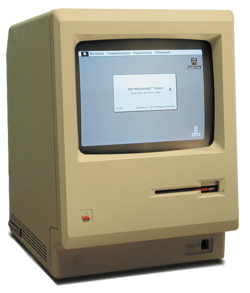

Steve Paul Jobs, más conocido como Steve Jobs, fue un informático y empresario estadounidense. Se le conoce por ser cofundador de Apple y máximo accionista de The Walt Disney Company. Nació en San Francisco el 24 de febrero de 1955. Murió a causa de un cáncer el 5 de octubre de 2011 en Palo Alto, California.
Macintosh: fue el invento que lo llevó a la fama. Se trata del primer ordenador con un sistema operativo con ventanas e iconos, diseñado especialmente para personas con poca experiencia en informática.
Mac (1998) +iPod (2001) +iPad (2010): el empresario californiano consiguió reinventar el ordenador personal, el reproductor MP3 y la tablet PC, con un diseño innovador y un software diferente.